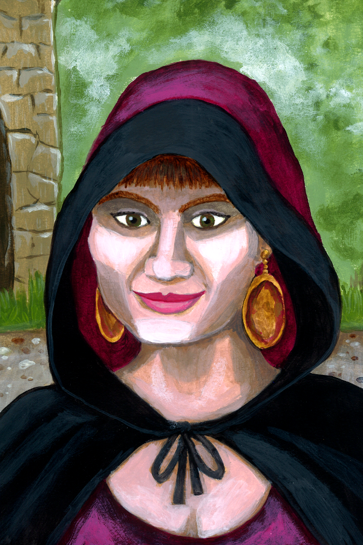

Lyria Ashveil
Half-Elf · Bard 3 · College of Lore · Entertainer
"The trick to a good story is deciding which parts are true while you're telling it."
14
AC
24
HP
30 ft
Speed
+2
Initiative
+2
Prof. Bonus
12
Passive Perc.
+5
Spell Attack
13
Spell DC
8
−1
STR
15
+2
DEX
14
+2
CON
12
+1
INT
10
+0
WIS
17
+3
CHA
Saving Throws
- Strength−1
- Dexterity+4
- Constitution+2
- Intelligence+1
- Wisdom+0
- Charisma+5
Skills (◆ = Expertise)
- Acrobatics (DEX)+4
- Animal Handling (WIS)+1
- Arcana (INT)+3
- Athletics (STR)+0
- Deception (CHA)+5
- History (INT)+3
- Insight (WIS)+2
- Intimidation (CHA)+4
- Medicine (WIS)+1
- Perception (WIS)+2
- Performance (CHA)+7
- Persuasion (CHA)+7
- Sleight of Hand (DEX)+3
- Stealth (DEX)+3
Jack of All Trades: +1 to all unlisted non-proficient skills.
Attacks
| Weapon | To Hit | Damage | Notes |
|---|---|---|---|
| Rapier | +4 | 1d8+2 piercing | Finesse, melee |
| Hand crossbow | +4 | 1d6+2 piercing | Range 30/120 |
| Vicious Mockery | WIS save 13 | 1d4 psychic | + disadvantage on next attack (cantrip) |
Equipment
- Rapier
- Hand crossbow & 20 bolts
- Studded leather armour
- Lute
- Entertainer's pack (costume, candles, rations, etc.)
- 3 daggers
- 40 gp
Racial Traits (Half-Elf)
Darkvision 60 ft. Fey Ancestry: advantage on saves vs charm, can't be put to sleep by magic.
Class Features
Bardic Inspiration3 / Long Rest (CHA mod)
Bonus action: choose one creature other than yourself within 60 ft that can hear you. They gain one Bardic Inspiration die (d6). Once in the next 10 minutes, they can roll the die and add the number to one ability check, attack roll, or saving throw. Only one die per creature at a time.
New player tip: Hand these out before big rolls — a +d6 on a saving throw vs the boss's big spell can be life-saving. Give them to melee fighters (who attack often) early in a fight.
Jack of All Trades
You add half your proficiency bonus (+1) to any ability check that doesn't already use your proficiency bonus. This makes you passably good at almost everything.
Song of Rest
If you or any friendly creatures that can hear your performance spend Hit Dice to regain HP at the end of a short rest, each of those creatures regains an extra 1d6 HP.
Expertise
Double proficiency bonus on Persuasion (+7) and Performance (+7). These are your signature skills — lean on them in social situations.
Cutting WordsCollege of Lore
When a creature you can see within 60 ft makes an attack roll, ability check, or damage roll, you can use your reaction to expend one Bardic Inspiration die and subtract the result from that roll. You must decide before the DM reveals the outcome.
New player tip: Use this reactively on enemy attacks when an ally is barely hanging on. Roll the die, then subtract from the enemy's roll — it can turn a hit into a miss.
Spells
Spellcasting: CHA mod (+3). Spell save DC 13. Spell attack +5. Recover all slots on long rest.
4
1st level
2
2nd level
Cantrips
- CantripVicious Mockery — WIS save DC 13; 1d4 psychic + target has disadvantage on its next attack roll (range 60 ft)
- CantripMinor Illusion — Create a sound or image within 30 ft (1 min); Investigation DC 13 to see through it
Spells Known (6)
- 1stHealing Word — Bonus action; 1d4+3 HP healed, range 60 ft. Use this over Cure Wounds — same healing, doesn't cost your action.
- 1stThunderwave — CON save DC 13; 2d8 thunder & pushed 10 ft; 15 ft cube from you.
- 1stDissonant Whispers — WIS save DC 13; 3d6 psychic, target must use reaction to flee (trigger AoOs from allies).
- 2ndHold Person — WIS save DC 13; target paralyzed (concentration, 1 min). Attacks against it auto-crit within 5 ft!
- 2ndShatter — CON save DC 13; 3d8 thunder in 10 ft sphere; disadvantage for constructs; destroys non-magic objects.
- 2ndFaerie Fire — DEX save DC 13; glowing creatures can't be invisible, attacks against them have advantage (concentration, 1 min).
Tip: Faerie Fire + Fighter with Action Surge = devastating. Hold Person + any melee ally within 5 ft = guaranteed crits.
Once Per Long Rest · Character Quirk
Earworm
As a bonus action, hum four bars of an aggressively catchy tune at one creature within 60 ft that can hear you. That creature must succeed on a DC 13 WIS save or spend its next bonus action involuntarily humming or whistling the melody instead of anything else. They know exactly what you did and they cannot stop.
Personality
Trait
I love a good story, whether true or embellished.
Ideal
Creativity. The world needs new perspectives, not more repetitions of the old.
Bond
I want to be famous, whatever it takes — and I want the story of how I got there to be worth telling.
Flaw
I can't help but embellish my own role in every story I tell.
Portrait: Joseph Hewitt · CC-BY 4.0